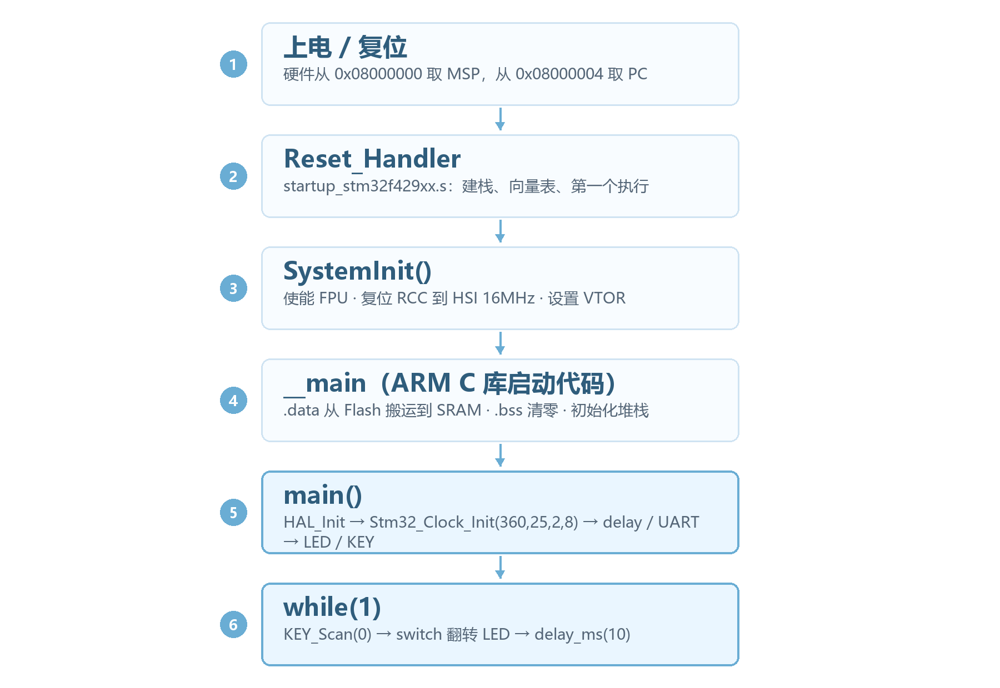
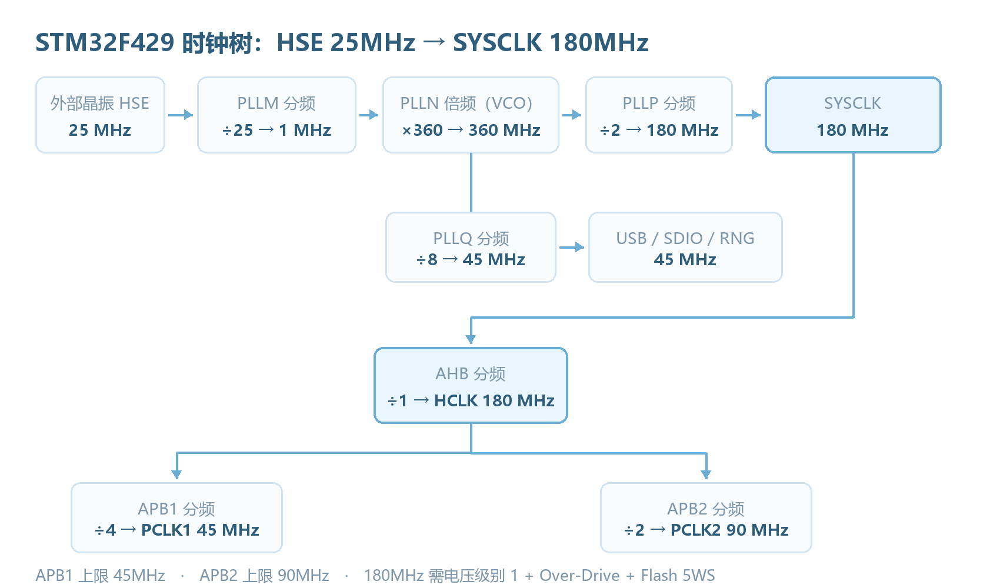
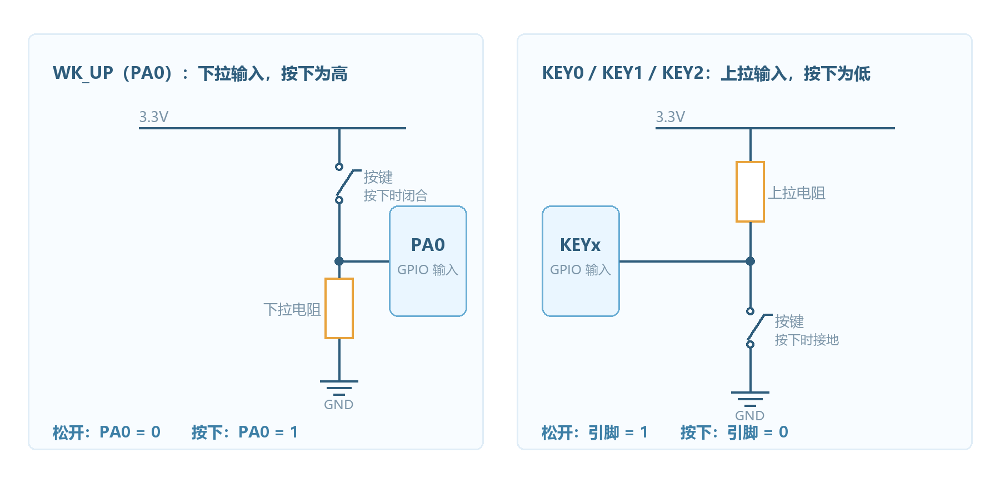
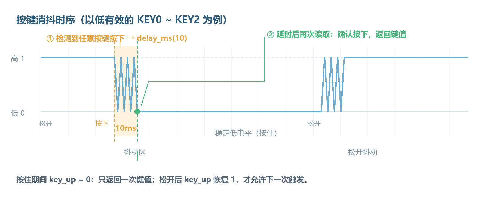

01 实验概述与硬件资源
本实验是 STM32F429 的第二个标准例程，核心目的是学习 GPIO 作为输入口的使用方法。程序通过 4 个板载按键控制 2 个 LED，完整走通「时钟使能 → GPIO 模式配置 → 电平读取 → 软件消抖 → 按键动作映射」这条链路。
硬件资源与引脚分配
| 器件 | 引脚 | GPIO 配置 | 有效电平 / 说明 |
|---|---|---|---|
| DS0（LED0） | PB1 | 推挽输出 | 低电平点亮，初始化输出高电平（熄灭） |
| DS1（LED1） | PB0 | 推挽输出 | 低电平点亮，初始化输出高电平（熄灭） |
| KEY0 | PH3 | 输入 + 上拉 | 按下为低电平 |
| KEY1 | PH2 | 输入 + 上拉 | 按下为低电平 |
| KEY2 | PC13 | 输入 + 上拉 | 按下为低电平 |
| WK_UP（KEY_UP） | PA0 | 输入 + 下拉 | 按下为高电平（唯一高有效按键） |
预期实验现象
| 按键 | 键值宏 | 动作 |
|---|---|---|
| WK_UP | WKUP_PRES = 4 |
DS0 与 DS1 互斥点亮（一亮一灭，再按互换） |
| KEY2 | KEY2_PRES = 3 |
DS0 状态翻转 |
| KEY1 | KEY1_PRES = 2 |
DS1 状态翻转 |
| KEY0 | KEY0_PRES = 1 |
DS0、DS1 同时翻转（同亮 / 同灭） |
交互模拟（按键逻辑演示）
switch(key) 逻辑的等效模拟，不涉及真实硬件；上电初始状态对应 LED_Init() 中两个引脚都写 1（灯灭）。02 工程目录架构
该工程沿用正点原子标准例程的分层结构：内核启动、用户代码、板级驱动、系统组件、ST 官方 HAL 驱动彼此分开。下图为根据本实验实际文件归纳的目录架构。
实验2 按键输入实验/ ├─ CORE/ 内核与启动相关 │ ├─ startup_stm32f429xx.s 中断向量表 + Reset_Handler（汇编启动文件） │ ├─ core_cm4.h Cortex-M4 内核外设（NVIC/SysTick/SCB）定义 │ ├─ cmsis_armcc.h CMSIS 针对 ARMCC 编译器的适配 │ ├─ core_cmFunc.h 内核功能指令封装 │ ├─ core_cmInstr.h 内核汇编指令封装 │ └─ core_cmSimd.h SIMD 指令封装 ├─ USER/ 用户代码与 MDK 工程 │ ├─ main.c main()：初始化顺序 + 按键处理主循环 │ ├─ main.h │ ├─ stm32f4xx_it.c 异常/中断服务函数（SysTick_Handler 等） │ ├─ stm32f4xx_it.h │ ├─ stm32f4xx_hal_conf.h HAL 模块裁剪与 HSE_VALUE 等配置 │ ├─ system_stm32f4xx.c SystemInit()：FPU、RCC 复位、向量表 │ ├─ system_stm32f4xx.h │ ├─ stm32f4xx.h ／ stm32f429xx.h：寄存器与器件定义 │ ├─ KEY.uvprojx MDK-ARM 工程文件 │ └─ KEY.uvoptx 工程调试/选项配置 ├─ HARDWARE/ 板级外设驱动（本实验重点） │ ├─ LED/ │ │ ├─ led.c LED_Init()：PB0/PB1 推挽输出 │ │ └─ led.h LED0/LED1 位带宏 │ └─ KEY/ │ ├─ key.c KEY_Init() + KEY_Scan() │ └─ key.h 引脚读取宏 + 键值宏 ├─ SYSTEM/ 正点原子系统组件 │ ├─ delay/ delay_init / delay_us / delay_ms（SysTick） │ ├─ sys/ Stm32_Clock_Init()、位带宏、数据类型 │ └─ usart/ uart_init()、USART1 中断与 printf 重定向 ├─ HALLIB/ │ └─ STM32F4xx_HAL_Driver/ │ ├─ Inc/ HAL 头文件（rcc/gpio/uart/cortex...） │ └─ Src/ HAL 源文件 ├─ OBJ/ 编译中间文件与 .hex/.axf 输出 ├─ readme.txt 实验目的、硬件资源、现象说明 └─ keilkilll.bat 一键清理编译中间文件
| 目录 / 文件 | 启动过程中的角色 |
|---|---|
| CORE / startup_stm32f429xx.s | 定义栈、堆、向量表；复位后第一个执行的 Reset_Handler 就在这里 |
| USER / system_stm32f4xx.c | SystemInit()，在进入 main 之前被启动文件调用 |
| USER / main.c | 完成 HAL、时钟、延时、串口、LED、按键的初始化，再进入死循环 |
| SYSTEM / sys、delay、usart | 提供 180MHz 时钟配置、SysTick 延时、串口初始化等基础能力 |
| HARDWARE / LED、KEY | 把 GPIO 配置与按键扫描封装成板级驱动，main.c 只需调用接口 |
| HALLIB / STM32F4xx_HAL_Driver | 所有 HAL_xxx() 函数的实现来源 |
USE_HAL_DRIVER, STM32F429xx；头文件搜索路径包含 ..\CORE; ..\USER; ..\HALLIB\STM32F4xx_HAL_Driver\Inc; ..\SYSTEM\...; ..\HARDWARE\...。这也是为什么 main.c 可以直接 #include "sys.h"。03 启动流程总览
STM32F429 复位后并不是直接执行 main()，而是先由 Cortex-M4 内核从 Flash 起始地址取出栈顶和复位入口，再经过启动文件、系统初始化、C 库初始化，最后才进入用户 main。整个链条如下：
上电 / 复位，硬件取向量
内核从 0x08000000 读取第 1 个字写入 MSP（主栈指针），从 0x08000004 读取第 2 个字写入 PC，该地址正是 Reset_Handler。
Reset_Handler 执行
启动文件中的复位入口先调用 SystemInit()，随后跳转到 C 库入口 __main。
SystemInit()
使能 FPU、把 RCC 恢复到复位默认状态（HSI 16MHz）、设置向量表地址。注意：180MHz 不在这一步配置。
__main（C 库启动代码）
完成分散加载：把已初始化的全局变量从 Flash 搬到 SRAM（.data）、把未初始化变量区清零（.bss）、初始化堆栈，然后调用 main()。
main() 中的初始化序列
HAL_Init() → Stm32_Clock_Init(360,25,2,8) → delay_init(180) → uart_init(115200) → LED_Init() → KEY_Init()。
进入 while(1) 主循环
每 10ms 扫描一次按键，根据返回值翻转 LED，如此往复。

关键地址与向量表
| 地址 | 内容 | 作用 |
|---|---|---|
| 0x08000000 | __initial_sp |
栈顶地址，复位时由硬件自动装入 MSP |
| 0x08000004 | Reset_Handler |
复位入口地址，复位时装入 PC |
| 0x08000008 起 | NMI / HardFault / ... / 外设中断 | 异常与中断向量，按固定顺序排列 |
| 0x20000000 | SRAM | 存放 .data、.bss、堆和栈 |
SystemInit() 并没有把主频配到 180MHz。它只是把时钟恢复到 16MHz HSI 并设置向量表，真正的 PLL 配置在 main() 里由 Stm32_Clock_Init() 完成。04 启动文件与 Reset_Handler
启动文件是唯一一段汇编代码，负责“把 C 世界搭起来”。它先定义栈和堆，然后把栈顶与复位入口放进向量表最前面的两个 32 位单元。
Stack_Size EQU 0x400 ; 栈大小 1KB Heap_Size EQU 0x200 ; 堆大小 512B AREA STACK, NOINIT, READWRITE, ALIGN=3 Stack_Mem SPACE Stack_Size __initial_sp ; 栈顶地址（向下生长） AREA RESET, DATA, READONLY __Vectors DCD __initial_sp ; 0x08000000：上电装入 MSP DCD Reset_Handler ; 0x08000004：上电装入 PC DCD NMI_Handler DCD HardFault_Handler ; ... 其余异常与中断向量 ... Reset_Handler PROC EXPORT Reset_Handler [WEAK] IMPORT SystemInit IMPORT __main LDR R0, =SystemInit BLX R0 ; ① 先执行 SystemInit LDR R0, =__main BX R0 ; ② 再跳 C 库启动，最终调用 main ENDP
为什么要经过 __main 而不是直接跳 main
- __main 属于 ARM C 库，它会先执行
__scatterload，按照分散加载文件把 RW 数据从 Flash 复制到 RAM，并把 ZI 段清零。 - 只有全局变量、静态变量都处于正确初值后，
main()里的 C 代码才可信。 - 如果直接跳到 main，未初始化变量可能是随机值，
KEY_Scan()中的静态变量key_up也不会得到预期的初值 1。
05 SystemInit 系统初始化
SystemInit() 是 ST 官方提供的系统级初始化函数，启动文件在跳转 C 库之前调用它。它只做三件基础工作：开 FPU、复位时钟树、定位向量表。
void SystemInit(void)
{
/* 1. 使能浮点单元：允许访问 CP10 / CP11 */
SCB->CPACR |= ((3UL << 10*2) | (3UL << 11*2));
/* 2. 把 RCC 时钟配置恢复到复位默认值 */
RCC->CR |= (uint32_t)0x00000001; // 打开 HSI
RCC->CFGR = 0x00000000; // 时钟源选择、分频全部清零
RCC->CR &= (uint32_t)0xFEF6FFFF; // 关闭 HSEON / CSSON / PLLON
RCC->PLLCFGR = 0x24003010; // PLL 配置恢复默认
RCC->CR &= (uint32_t)0xFFFBFFFF; // 关闭 HSEBYP
RCC->CIR = 0x00000000; // 关闭所有中断
/* 3. 向量表定位到内部 Flash 起始地址 */
#ifdef VECT_TAB_SRAM
SCB->VTOR = SRAM_BASE | VECT_TAB_OFFSET;
#else
SCB->VTOR = FLASH_BASE | VECT_TAB_OFFSET; // 0x08000000
#endif
}
| 动作 | 目的 |
|---|---|
| 设置 CPACR 的 CP10/CP11 | 让后续 C 代码可以使用硬件 FPU（浮点指令），否则触发 UsageFault |
| 复位 RCC 相关寄存器 | 保证从确定状态开始，此时系统时钟为内部 HSI 16MHz |
| 设置 SCB->VTOR | 告诉内核异常向量表在哪里；本工程偏移为 0x00，即 Flash 起始处 |
SystemCoreClock 仍为 16000000。它会在 HAL_RCC_ClockConfig() 中被自动更新为 180000000。06 HAL_Init 初始化
HAL_Init() 是进入 main 后的第一步，负责 Flash 加速、中断优先级分组、SysTick 时基以及底层 MspInit 回调。
HAL_StatusTypeDef HAL_Init(void)
{
__HAL_FLASH_INSTRUCTION_CACHE_ENABLE(); // 使能指令 Cache
__HAL_FLASH_DATA_CACHE_ENABLE(); // 使能数据 Cache
__HAL_FLASH_PREFETCH_BUFFER_ENABLE(); // 使能预取缓冲
HAL_NVIC_SetPriorityGrouping(NVIC_PRIORITYGROUP_2); // 中断优先级分组 2
HAL_InitTick(TICK_INT_PRIORITY); // SysTick 1ms 时基，TICK_INT_PRIORITY = 0x0F
HAL_MspInit(); // 底层初始化回调（本工程为空实现）
return HAL_OK;
}
其中 HAL_InitTick() 的默认实现为：
__weak HAL_StatusTypeDef HAL_InitTick(uint32_t TickPriority)
{
HAL_SYSTICK_Config(HAL_RCC_GetHCLKFreq() / 1000); // 每 1ms 产生一次中断
HAL_NVIC_SetPriority(SysTick_IRQn, TickPriority, 0);
return HAL_OK;
}
| 阶段 | HCLK | SysTick 重装值 | 说明 |
|---|---|---|---|
| HAL_Init 时 | 16MHz（HSI） | 16000 | 先建立一个可用的 1ms 时基 |
| Stm32_Clock_Init 之后 | 180MHz | 180000 | HAL_RCC_ClockConfig() 末尾会再次调用 HAL_InitTick()，自动按新频率重算 |
SysTick 中断做了什么
在 USER/stm32f4xx_it.c 中：
void SysTick_Handler(void)
{
HAL_IncTick(); // uwTick++，HAL_Delay() 依赖这个全局节拍
}
HAL_Delay(10) 已经可用；而本实验的 delay_ms(10) 走的是正点原子自己写的 SysTick 轮询延时，不依赖该中断节拍。07 时钟配置 180MHz
板载外部晶振为 25MHz。通过主 PLL 的「先分频、再倍频、后分频」把 25MHz 抬升到 180MHz，并分别给 AHB、APB1、APB2 与 USB 等总线提供时钟。
HAL_Init(); // ① 先建立 HAL 基础时基 Stm32_Clock_Init(360, 25, 2, 8); // ② plln=360, pllm=25, pllp=2, pllq=8 delay_init(180); // ③ 告诉延时函数当前系统时钟为 180MHz
void Stm32_Clock_Init(u32 plln, u32 pllm, u32 pllp, u32 pllq)
{
__HAL_RCC_PWR_CLK_ENABLE(); // 使能 PWR 时钟
__HAL_PWR_VOLTAGESCALING_CONFIG(PWR_REGULATOR_VOLTAGE_SCALE1); // 调压器电压级别 1
RCC_OscInitStructure.OscillatorType = RCC_OSCILLATORTYPE_HSE; // 时钟源 HSE
RCC_OscInitStructure.HSEState = RCC_HSE_ON; // 打开外部晶振
RCC_OscInitStructure.PLL.PLLState = RCC_PLL_ON;
RCC_OscInitStructure.PLL.PLLSource = RCC_PLLSOURCE_HSE;
RCC_OscInitStructure.PLL.PLLM = pllm; // 25
RCC_OscInitStructure.PLL.PLLN = plln; // 360
RCC_OscInitStructure.PLL.PLLP = pllp; // 2
RCC_OscInitStructure.PLL.PLLQ = pllq; // 8
HAL_RCC_OscConfig(&RCC_OscInitStructure);
HAL_PWREx_EnableOverDrive(); // 开启 Over-Drive，180MHz 必需
RCC_ClkInitStructure.SYSCLKSource = RCC_SYSCLKSOURCE_PLLCLK; // 系统时钟选 PLL
RCC_ClkInitStructure.AHBCLKDivider = RCC_SYSCLK_DIV1; // HCLK = 180MHz
RCC_ClkInitStructure.APB1CLKDivider = RCC_HCLK_DIV4; // PCLK1 = 45MHz
RCC_ClkInitStructure.APB2CLKDivider = RCC_HCLK_DIV2; // PCLK2 = 90MHz
HAL_RCC_ClockConfig(&RCC_ClkInitStructure, FLASH_LATENCY_5); // Flash 5 个等待周期
}
时钟树与计算结果

| 参数 | 公式 | 结果 |
|---|---|---|
| VCO 频率 Fvco | 25MHz × (360 / 25) | 360MHz |
| 系统时钟 SYSCLK | Fvco / PLLP = 360 / 2 | 180MHz |
| USB/SDIO/RNG | Fvco / PLLQ = 360 / 8 | 45MHz |
| AHB 总线 HCLK | SYSCLK / 1 | 180MHz |
| APB1 总线 PCLK1 | HCLK / 4 | 45MHz（上限 45MHz） |
| APB2 总线 PCLK2 | HCLK / 2 | 90MHz（上限 90MHz） |
GPIO_SPEED_HIGH。08 delay 延时初始化
delay_init(180) 把系统时钟频率告诉延时模块，并把 SysTick 的计数时钟切换为 HCLK。本工程 SYSTEM_SUPPORT_OS = 0，所以使用不依赖操作系统的轮询延时。
static u32 fac_us = 0; // 每 1us 需要的 SysTick 计数个数 void delay_init(u8 SYSCLK) { HAL_SYSTICK_CLKSourceConfig(SYSTICK_CLKSOURCE_HCLK); // SysTick 时钟 = HCLK fac_us = SYSCLK; // 180MHz → fac_us = 180 }
delay_us 的计数原理
void delay_us(u32 nus)
{
u32 ticks = nus * fac_us; // 需要的 SysTick 节拍数
u32 reload = SysTick->LOAD; // 当前重装值
u32 told = SysTick->VAL; // 读当前计数值
u32 tnow, tcnt = 0;
while (1)
{
tnow = SysTick->VAL; // SysTick 是递减计数器
if (tnow != told)
{
if (tnow < told) tcnt += told - tnow; // 未发生重装
else tcnt += reload - tnow + told; // 发生重装，补偿
told = tnow;
if (tcnt >= ticks) break; // 时间到
}
}
}
void delay_ms(u16 nms)
{
u32 i;
for (i = 0; i < nms; i++) delay_us(1000); // 1ms = 1000us
}
| 要点 | 说明 |
|---|---|
| 不占用中断 | 直接轮询 SysTick->VAL 的递减过程，即使 SysTick 中断未开启也能工作 |
| 自动处理重装 | 计数器减到 0 会重装，代码用 reload - tnow + told 做跨周期补偿 |
| 精度依赖 fac_us | 传入 180 才与 180MHz 的 HCLK 匹配；若仍传 168 等旧值，延时会出现偏差 |
| 本实验用途 | KEY_Scan() 内的 10ms 消抖与主循环末尾的 10ms 节拍都来自这里 |
09 USART1 串口初始化
虽然本实验的最终现象只体现在 LED 上，main 仍然按标准流程初始化了串口，便于后续调试输出。串口 1 使用 PA9（TX）、PA10（RX），复用功能为 AF7。
UART1_Handler.Instance = USART1; UART1_Handler.Init.BaudRate = 115200; // 波特率 UART1_Handler.Init.WordLength = UART_WORDLENGTH_8B; // 8 位数据 UART1_Handler.Init.StopBits = UART_STOPBITS_1; // 1 位停止位 UART1_Handler.Init.Parity = UART_PARITY_NONE; // 无校验 UART1_Handler.Init.HwFlowCtl = UART_HWCONTROL_NONE; // 无硬件流控 UART1_Handler.Init.Mode = UART_MODE_TX_RX; // 收发模式 HAL_UART_Init(&UART1_Handler); // 内部会调用 HAL_UART_MspInit HAL_UART_Receive_IT(&UART1_Handler, (u8 *)aRxBuffer, RXBUFFERSIZE); // 开启接收中断
底层初始化 HAL_UART_MspInit
if (huart->Instance == USART1)
{
__HAL_RCC_GPIOA_CLK_ENABLE(); // GPIOA 时钟
__HAL_RCC_USART1_CLK_ENABLE(); // USART1 时钟
GPIO_Initure.Pin = GPIO_PIN_9; // PA9 → TX
GPIO_Initure.Mode = GPIO_MODE_AF_PP;
GPIO_Initure.Pull = GPIO_PULLUP;
GPIO_Initure.Speed = GPIO_SPEED_FAST;
GPIO_Initure.Alternate = GPIO_AF7_USART1;
HAL_GPIO_Init(GPIOA, &GPIO_Initure);
GPIO_Initure.Pin = GPIO_PIN_10; // PA10 → RX
HAL_GPIO_Init(GPIOA, &GPIO_Initure);
HAL_NVIC_EnableIRQ(USART1_IRQn);
HAL_NVIC_SetPriority(USART1_IRQn, 3, 3); // 抢占 3，子优先级 3
}
HAL_UART_Init() 负责通用参数，HAL_UART_MspInit() 负责时钟、引脚、中断这些与具体板子相关的底层配置，并且会被自动调用。10 LED 与 KEY 的 GPIO 配置
LED：PB0 / PB1 推挽输出
void LED_Init(void)
{
GPIO_InitTypeDef GPIO_Initure;
__HAL_RCC_GPIOB_CLK_ENABLE(); // 开 GPIOB 时钟（必须先开）
GPIO_Initure.Pin = GPIO_PIN_0 | GPIO_PIN_1; // PB0、PB1
GPIO_Initure.Mode = GPIO_MODE_OUTPUT_PP; // 推挽输出
GPIO_Initure.Pull = GPIO_PULLUP; // 上拉
GPIO_Initure.Speed = GPIO_SPEED_HIGH; // 高速
HAL_GPIO_Init(GPIOB, &GPIO_Initure);
HAL_GPIO_WritePin(GPIOB, GPIO_PIN_0, GPIO_PIN_SET); // 输出 1，DS1 熄灭
HAL_GPIO_WritePin(GPIOB, GPIO_PIN_1, GPIO_PIN_SET); // 输出 1，DS0 熄灭
}
LED 采用低电平点亮：写 0 → 灯亮，写 1 → 灯灭。因此初始化时两个引脚都写 1，保证上电后两灯全灭。
LED 的位带宏
// led.h #define LED0 PBout(1) // BSRR/ODR 位带别名，写 0/1 直接操作 PB1 #define LED1 PBout(0) // 操作 PB0 // sys.h：把外设位映射到别名区，实现类似 51 单片机的位操作 #define BITBAND(addr, bitnum) ((addr & 0xF0000000) + 0x2000000 + ((addr & 0xFFFFF) << 5) + (bitnum << 2)) #define PBout(n) BIT_ADDR(GPIOB_ODR_Addr, n)
KEY：三组输入配置
void KEY_Init(void)
{
GPIO_InitTypeDef GPIO_Initure;
__HAL_RCC_GPIOA_CLK_ENABLE(); // PA0 → WK_UP
__HAL_RCC_GPIOC_CLK_ENABLE(); // PC13 → KEY2
__HAL_RCC_GPIOH_CLK_ENABLE(); // PH2/PH3 → KEY1/KEY0
GPIO_Initure.Pin = GPIO_PIN_0; // PA0
GPIO_Initure.Mode = GPIO_MODE_INPUT; // 输入
GPIO_Initure.Pull = GPIO_PULLDOWN; // 下拉：松开为低，按下为高
GPIO_Initure.Speed = GPIO_SPEED_HIGH;
HAL_GPIO_Init(GPIOA, &GPIO_Initure);
GPIO_Initure.Pin = GPIO_PIN_13; // PC13
GPIO_Initure.Mode = GPIO_MODE_INPUT;
GPIO_Initure.Pull = GPIO_PULLUP; // 上拉：松开为高，按下为低
HAL_GPIO_Init(GPIOC, &GPIO_Initure);
GPIO_Initure.Pin = GPIO_PIN_2 | GPIO_PIN_3; // PH2、PH3
HAL_GPIO_Init(GPIOH, &GPIO_Initure); // 沿用上一步的上拉配置
}
Pin，Mode 和 Pull 仍是上一步 PC13 的「输入 + 上拉」。这不是遗漏，而是有意复用配置：KEY0/KEY1 与 KEY2 一样都是上拉输入、按下为低。若独立写代码，建议重新完整赋值，避免可读性下降。按键读取：HAL 函数 vs 位带
// key.h：本工程实际启用的 HAL 读取方式 #define KEY0 HAL_GPIO_ReadPin(GPIOH, GPIO_PIN_3) // PH3 #define KEY1 HAL_GPIO_ReadPin(GPIOH, GPIO_PIN_2) // PH2 #define KEY2 HAL_GPIO_ReadPin(GPIOC, GPIO_PIN_13) // PC13 #define WK_UP HAL_GPIO_ReadPin(GPIOA, GPIO_PIN_0) // PA0 // 被注释掉的位带写法，效果等价，执行更快 //#define KEY0 PHin(3) //#define WK_UP PAin(0)
| 引脚 | 模式 | 上下拉 | 松开时 | 按下时 |
|---|---|---|---|---|
| PA0 / WK_UP | 输入 | 下拉 | 0 | 1 |
| PC13 / KEY2 | 输入 | 上拉 | 1 | 0 |
| PH2 / KEY1 | 输入 | 上拉 | 1 | 0 |
| PH3 / KEY0 | 输入 | 上拉 | 1 | 0 |

11 按键扫描 KEY_Scan
机械按键在按下和松开的瞬间会产生数毫秒的抖动，直接读取可能一次按下被识别成多次。本实验用「检测到按下 → 延时 10ms → 再确认」的方式做软件消抖，并用静态变量 key_up 实现单次触发。
u8 KEY_Scan(u8 mode)
{
static u8 key_up = 1; // 按键松开标志，静态变量只初始化一次
if (mode == 1) key_up = 1; // 支持连按：每次进来都允许再次触发
// 有任意按键处于按下状态，且上一次已松开
if (key_up && (KEY0 == 0 || KEY1 == 0 || KEY2 == 0 || WK_UP == 1))
{
delay_ms(10); // ① 延时 10ms，跳过抖动区
key_up = 0; // ② 标记已处理，按住期间不再重复触发
// ③ 按优先级再次确认，KEY0 最高，WK_UP 最低
if (KEY0 == 0) return KEY0_PRES; // 1
else if (KEY1 == 0) return KEY1_PRES; // 2
else if (KEY2 == 0) return KEY2_PRES; // 3
else if (WK_UP == 1) return WKUP_PRES; // 4
}
else if (KEY0 == 1 && KEY1 == 1 && KEY2 == 1 && WK_UP == 0)
{
key_up = 1; // ④ 四个按键全部松开，恢复可触发状态
}
return 0; // 无按键按下
}
消抖时序

三种关键机制
| 机制 | 代码 | 效果 |
|---|---|---|
| 消抖 | delay_ms(10) |
避开按下瞬间 5~10ms 的电平抖动，第二次读取才是稳定值 |
| 单次触发 | key_up = 0 |
按住不放期间只返回一次键值；必须松开（key_up 复位为 1）才能再次触发 |
| 连按模式 | mode == 1 |
每次调用都强制 key_up = 1，按住即可周期性返回键值；本实验传 0，不使用连按 |
| 优先级 | if / else if 顺序 | KEY0 > KEY1 > KEY2 > WK_UP，同时按下多个键时只响应优先级最高的那个 |
12 主循环与实验现象
int main(void)
{
u8 key;
HAL_Init(); // ① HAL 库初始化
Stm32_Clock_Init(360, 25, 2, 8);// ② 系统时钟 180MHz
delay_init(180); // ③ 延时函数初始化
uart_init(115200); // ④ 串口 1 初始化
LED_Init(); // ⑤ LED 引脚初始化
KEY_Init(); // ⑥ 按键引脚初始化
while (1)
{
key = KEY_Scan(0); // ⑦ 扫描按键，0 = 不支持连按
switch (key)
{
case WKUP_PRES: // 4：两灯互斥点亮
LED1 = !LED1;
LED0 = !LED1;
break;
case KEY2_PRES: // 3：DS0 翻转
LED0 = !LED0;
break;
case KEY1_PRES: // 2：DS1 翻转
LED1 = !LED1;
break;
case KEY0_PRES: // 1：两灯同时翻转
LED0 = !LED0;
LED1 = !LED1;
break;
}
delay_ms(10); // ⑧ 主循环节拍约 10ms
}
}
初始化顺序为什么不能随意打乱
HAL_Init()必须最先，后续所有 HAL 函数依赖它建立的基础环境。Stm32_Clock_Init()之后系统才运行在 180MHz，因此delay_init()必须传 180 而不是 16。- GPIO 初始化前必须先使能对应端口时钟（GPIOA/C/H/B），否则寄存器写入无效。
- 外设初始化完成后才进入 while(1)，避免扫描到未配置的引脚。
键值与动作对照
| 返回值 | 触发条件 | 执行动作 | 最终效果 |
|---|---|---|---|
| 4 / WKUP_PRES | PA0 为高 | LED1 = !LED1; LED0 = !LED1; |
两灯互斥：先翻转 DS1，再让 DS0 取 DS1 的反值 |
| 3 / KEY2_PRES | PC13 为低 | LED0 = !LED0; |
DS0 单独翻转 |
| 2 / KEY1_PRES | PH2 为低 | LED1 = !LED1; |
DS1 单独翻转 |
| 1 / KEY0_PRES | PH3 为低 | LED0 = !LED0; LED1 = !LED1; |
两灯同时翻转：同亮或同灭 |
| 0 | 无键按下 | switch 不进入任何分支 | LED 保持原状态 |
LED0 = !LED1 直接把 DS0 赋成 DS1 的反值，所以无论之前两灯是什么状态，执行后一定一亮一灭。PBout(n) 而不是 HAL_GPIO_WritePin() 的原因之一。13 实验总结
完整启动链条（按执行顺序）
上电复位
└─ 硬件从 0x08000000 取 MSP、从 0x08000004 取 PC
└─ Reset_Handler（startup_stm32f429xx.s）
├─ SystemInit() 开 FPU、复位 RCC、设置 VTOR
└─ __main .data 搬移、.bss 清零、初始化堆栈
└─ main()
├─ HAL_Init() Cache/预取、优先级分组、SysTick 1ms
├─ Stm32_Clock_Init(360,25,2,8) HSE 25MHz → SYSCLK 180MHz
├─ delay_init(180) fac_us = 180，SysTick 时钟 = HCLK
├─ uart_init(115200) PA9/PA10 AF7，USART1 收发
├─ LED_Init() PB0/PB1 推挽输出，初始输出 1（灭）
├─ KEY_Init() PA0 下拉；PC13/PH2/PH3 上拉
└─ while(1)
├─ KEY_Scan(0) 10ms 消抖 + 单次触发 + 优先级
├─ switch(key) 翻转对应 LED
└─ delay_ms(10) 主循环节拍
必须掌握的四个要点
| 要点 | 本实验中的体现 |
|---|---|
| 时钟先行 | GPIOA/C/H/B、USART1、PWR 的时钟都必须先使能，否则后续寄存器配置无效 |
| 输入模式 + 上下拉 | WK_UP 下拉、高有效；KEY0~KEY2 上拉、低有效。上下拉决定松开时的默认电平 |
| 消抖与单次触发 | 10ms 延时避开抖动；静态 key_up 保证按住只响应一次，松手后才能再次触发 |
| 输出电平语义 | LED 低电平点亮，初始化写 1 表示熄灭；位带宏让 LED0 = !LED0 一行完成翻转 |
可以继续延伸的方向
- 外部中断方式：把按键引脚配置为 EXTI 下降沿/上升沿触发，在中断里置标志，主循环处理，避免轮询。
- 长按与双击：用状态机记录按下时长与连续按下次数，实现长按、双击等复合手势。
- 按键队列：中断中把键值写入环形缓冲区，主循环按顺序消费，适合复杂界面交互。
- 串口调试：本实验已初始化 USART1，可加入
printf输出键值，验证扫描结果。
KEY_Scan() 返回的键值观察现象，再尝试修改优先级顺序或把 mode 改为 1 体验连按，最后再动手改成中断方式。每一步都只改一个变量，现象才容易解释。